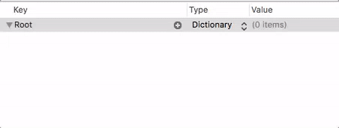

Property lists
Ejercicio
Al final de esta sección hay un ejercicio puntuado con 0.5 puntos del total de 1.5 puntos de todos los ejercicios de hoy.
Las property list son estructuras de datos tipo pares de clave-valor ampliamente utilizadas en iOS para almacenar datos de configuración.
Las property list tienen dos limitaciones prácticas fundamentales:
- No se puede almacenar cualquier tipo de datos, solo algunos:
String, valores numéricos,Data,DateoBoolean. Y como colecciones de datosArrayyDictionary. - No son modificables, es decir, no tenemos un API para cambiar un único dato en el archivo. Hay que serializar de nuevo toda la estructura y generar el archivo partiendo de cero. Por ello no son adecuadas para almacenar grandes cantidades de datos.
El formato de las property lists¶
Las property lists se pueden almacenar en archivos en modo texto o binario. En los ejemplos usaremos sobre todo el modo texto. En este modo se usa el formato XML, aquí tenemos un ejemplo:
<?xml version="1.0" encoding="UTF-8"?>
<!DOCTYPE plist PUBLIC "-//Apple//DTD PLIST 1.0//EN" "http://www.apple.com/DTDs/PropertyList-1.0.dtd">
<plist version="1.0">
<dict>
<key>colorFondo</key>
<array>
<integer>255</integer>
<integer>255</integer>
<integer>0</integer>
</array>
<key>fuente</key>
<string>System</string>
</dict>
</plist>
La raíz de la estructura de datos puede ser un diccionario, como en nuestro caso, o un array.
Xcode incluye un editor de property lists con el que podemos editar los datos de forma "asistida" sin tener que tocar directamente el XML. Creamos una nueva lista con File > New y entre las plantillas elegimos evidentemente Property list. La extensión típica para estos archivos es .plist. Lo primero que hacemos es elegir qué va a ser la raíz (array o diccionario) y luego vamos creando "nodos". Para cada uno tecleamos un nombre, elegimos el tipo y tecleamos el valor.

En el caso de los arrays añadimos valores "desplegando" el nodo (con la flechita que aparece a la izquierda, y pulsando sobre el botón del +)

Podemos también editar el XML en modo texto pulsando con botón derecho sobre el archivo y eligiendo en el menú contextual "Open as > Source Code"
Leer una property list¶
Leer una property list de un archivo es muy sencillo usando el encoding/decoding de Swift. En el framework Foundation se define un PropertyListDecoder que sirve para deserializar estos archivos.
Por ejemplo supongamos una plist cuya raíz es un diccionario y con dos propiedades, nombre de tipo String y puntuacion de tipo entero. Una vez deserializados, podemos almacenar los datos en un struct de Swift como este
struct Props : Codable {
var nombre : String
var puntuacion : Int
}
Cuando se crea una plist con Xcode se añade al bundle de la aplicación. Suponiendo que está en dicho bundle podríamos leerla con el siguiente código, que como se ve es muy sencillo gracias a Codable:
if let plistURL = Bundle.main.url(forResource:"mi_plist",
withExtension:"plist") {
let data = try Data(contentsOf: plistURL)
let decoder = PropertyListDecoder()
let misProps = try decoder.decode(Props.self, from: data)
print(misProps)
}
En versiones anteriores de Swift la forma de leer/guardar property list era distinta, algo más engorrosa (aunque tampoco excesivamente complicada). Podéis consultar un ejemplo comparando el método antiguo y el nuevo en este blog.
Guardar una property list¶
Veamos cómo haríamos el paso inverso: almacenar en un archivo una estructura de datos compatible con una property list.
Recordemos que el bundle de la aplicación es solo de lectura, por lo que un .plist almacenado en esta localización no será modificable. Si necesitáramos modificar el .plist del bundle la estrategia habitual es que cuando arranque la aplicación se realice una copia en otro directorio con permisos de escritura, típicamente
Documents, y que a partir de entonces se trabaje con esa copia.
Suponiendo que tenemos definido el mismo struct Props del ejemplo anterior, haríamos uso de un PropertyListEncoder como sigue:
var urlDocs = FileManager.default.urls(for:.documentDirectory,
in:.userDomainMask)[0]
let urlPlist = urlDocs.appendingPathComponent("result.plist")
let encoder = PropertyListEncoder()
encoder.outputFormat = .xml
let misProps = Props(nombre:"John", puntuacion:100)
let data = try encoder.encode(misProps)
try data.write(to: urlPlist)
Ejercicio de la sección (0.5 puntos)¶
Tomando como base los ejemplos de código de la sección, define una estructura de datos propia y guárdala en un fichero .plist. Luego con la aplicación SimSim comprueba que se ha guardado correctamente. Paso a paso:
- Crea un
structSwift llamadoAlumnoque sea conforme al protocoloCodabley que tenga dos campos: - un String llamadonombre- un array deFloatcon lasnotas - Crea dos alumnos y añádelos a un array
let a1 = Alumno(nombre: "Pepe", notas: [5, 8.5, 10]) let a2 = Alumno(nombre: "Eva", notas: [10, 9]) let alumnos = [a1,a2] - Basándote en el último ejemplo de código de esta sección, haz que se guarde el array
alumnosen un fichero de tipo.plistllamadoalumnos.plist. Puedes incluir el código en elviewDidLoaddelViewControllerpara que se ejecute al cargar el controller de la app. - Comprueba mediante la aplicación SimSim que se ha creado el archivo dentro del
Documentsdel sandbox de la app. Abre el archivo con algún editor de texto y comprueba su contenido. Incluye el archivo en las respuestas de los ejercicios.